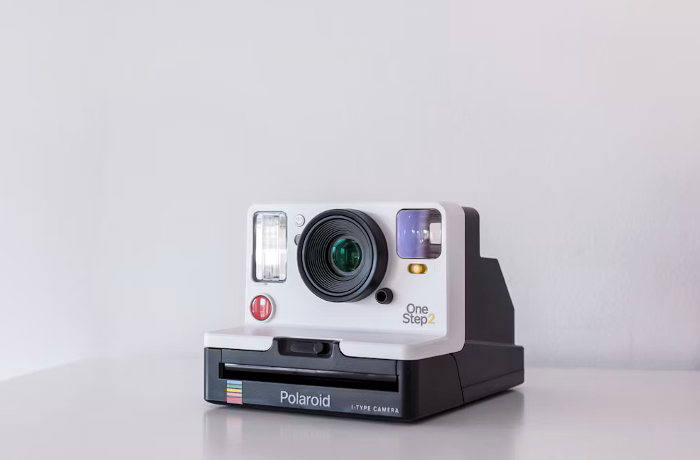

✦ Aesthetic Photo Editor
Create magic in
Create magic in
every frame
Перетворіть ваші щоденні знімки на вічні витвори мистецтва за допомогою наших теплих вінтажних фільтрів та естетичних інструментів редагування.

Vintage Warmth Filter